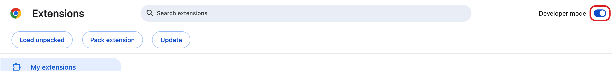
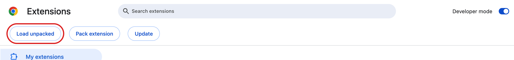
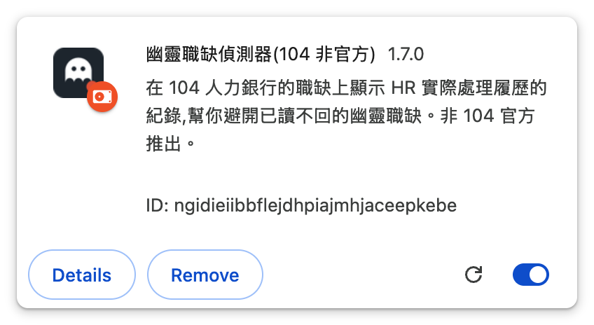
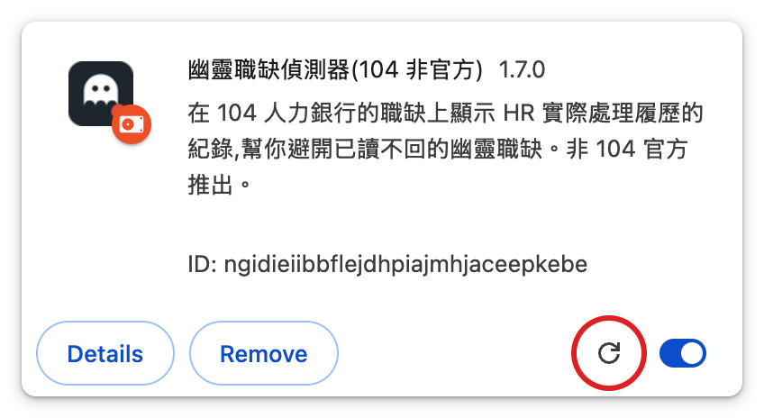

幽靈職缺偵測器
在 104 人力銀行的職缺上,把 104 手上有、但頁面上不顯示的那半邊數據直接印出來。
這一頁只講怎麼安裝。它做什麼、資料哪裡來,見
GitHub 上的說明。
它解決什麼問題
104 的資料庫記得每個職缺「上次處理履歷」和「上次回覆應徵者」是幾天前,而且載入職缺時 就把這些欄位送到你的瀏覽器了 —— 但頁面上只顯示正面的那一半: 「3 天內處理過履歷」會出現,「近 30 天內一個應徵者都沒回覆過」則整行消失。 應徵人數也一樣,只給「6~10 人」的級距,不給精確數字。
這個外掛把另一半補上,然後就閉嘴 —— 不評分、不分級,也不推論職缺真假。

安裝
目前沒有上架 Chrome 線上應用程式商店。
104 這陣子一直在調整內部 API 的資料格式,而商店每次改版都要重新送審、審查通常要數週 —— 等審過了,外掛可能已經又要跟著改一次。與其讓商店上永遠掛著一個過時、甚至已經失效的版本, 不如先只走手動安裝:程式碼公開、隨時可以更新。等 104 那邊穩定下來再考慮上架。
手動安裝(開發人員模式)
以下畫面是英文版 Chrome。介面語言若是中文,對應的字是 「開發人員模式」與「載入未封裝項目」。
-
下載並解壓縮。
到 最新版本頁面
下載
ghost-job-detector-x.y.z.zip,解壓縮到一個你不會刪掉的資料夾 —— Chrome 之後每次啟動都會去那個位置讀,資料夾搬走或刪掉,外掛就會失效。 -
打開擴充功能頁面。
在 Chrome 網址列輸入
chrome://extensions/後按 Enter。 -
打開右上角的「開發人員模式」(Developer mode)。

裝好之後也要保持開啟 —— 關掉它,這個外掛會被 Chrome 一起停用。 這是「裝了但沒反應」最常見的原因。
-
點左上角的「載入未封裝項目」(Load unpacked),選擇第 1 步解壓縮出來的資料夾。

這個按鈕只有在開發人員模式打開後才會出現。選資料夾時要選含有
manifest.json的那一層,不是它的上層。 -
確認外掛已經出現在清單上。

右下角的開關是藍色,代表已啟用。
- 到 104 找工作 搜尋任何職缺。 每張職缺卡片上會多出一列數據,就像最上面那張圖。 如果你在安裝前就已經開著 104 的分頁,記得重新整理:外掛只在頁面載入時注入。
有新版時怎麼更新
手動安裝不會自動更新,要自己來,但只有兩步:
- 回到 Releases 下載新版 zip,解壓縮覆蓋掉原本那個資料夾(位置不要換,換了要重新載入一次)。
-
到
chrome://extensions/,點這個外掛卡片上的重新載入圖示。
然後重新整理 104 的分頁就會跑新版了。
另外 Chrome 每次啟動可能會提醒你「停用開發人員模式的擴充功能」—— 點「保留」,不要點停用。
支援環境
| 環境 | 支援 | 說明 |
|---|---|---|
| Chrome(桌面版) | ✅ | macOS、Windows、Linux 都可以 —— 決定的是瀏覽器,不是作業系統 |
| Edge | ✅ | 同為 Chromium 核心,安裝方式相同 |
| Brave、Vivaldi 等 Chromium 瀏覽器 | ✅ | 同上 |
| Firefox | ❌ | 擴充功能格式不同,目前沒有 Firefox 版 |
| Safari | ❌ | 同上 |
| 手機 / 平板 | ❌ | Android 與 iOS 版 Chrome 都不支援擴充功能,這是瀏覽器本身的限制 |
裝了但沒反應?
依照最常見的順序檢查:
-
「開發人員模式」被關掉了。
這是最常見的原因。手動安裝的擴充功能靠它才能執行,安裝完把它關掉,外掛就會一起被停用
(見上面安裝步驟第 3 步的圖)。
到
chrome://extensions/確認右上角的開關是開的。 - 安裝後沒有重新整理 104 的頁面。 外掛只會在頁面載入時注入,已經開著的分頁要重新整理一次。
- 頁面不在支援範圍內。 目前只在 104 的搜尋結果、AI 推薦、職缺內頁和公司頁運作, 其他頁面(例如首頁、履歷管理)不會有徽章。
- 外掛被自己關掉了。 點瀏覽器工具列上的外掛圖示,確認「啟用偵測」是開的。
- Chrome 啟動時跳出「停用開發人員模式的擴充功能」。 點「保留」,不要點停用。
如果徽章出現但寫著「無法取得資料」或「資料格式可能已變更」,那多半是 104 改版了。 外掛的彈出視窗會顯示連續失敗的次數,麻煩到 GitHub Issues 回報。